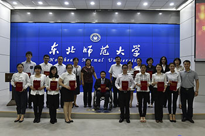

|
 |
| “理想与成才”报告团是我校为积极培育、深入挖掘大学生先进典型，展现我校学生的精神风貌，充分发挥先进典型的示范引领作用的特色平台。 是学校多年来探索出的一条引导学生成长成才的重要途径，是对学生进行典型示范教育、推进社会主义核心价值观落细落小落实的重要载体，旨在通过表彰和宣传报告团成员的突出事迹，以“身边人讲述身边事、身边事影响身边人”的方式，与在校学生分享他们大学四年的学习收获、生活体验、成长感悟，在全校范围内营造崇尚先进、学习先进、争做先进的良好风气。 自1996年至今，学校已成功组建了十五届“理想与成才”报告团，已有15届报告团的成员从师大出发，展示了我校优秀学子的风采。 |